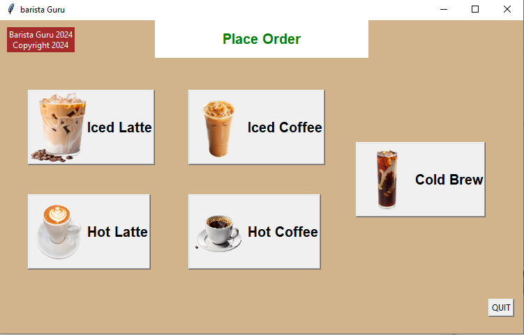

About the classes I'm taking this semester at WSU:
Since I am a Computer Science major, most of my favorite classes were CSC classes and BE classes. To learn more about my favorite courses keep scrolling!
Below are some of my favorite and most memorable classes that I have taken throughtout the semester at WSU:
| Course | Discription | Noteworthy Assignments/Projects | Picture of Assignments/Projects |
|---|---|---|---|
| Basc Engg I: CAD/3-D Prntg (BE1200) | In this class, students were able make 2D and 3D designs using the software Siemens NX. After we completed the assignments, we were able to 3D print all the designs created and put the parts together to make an object. | One noteworthy project I did was a freefall ride. It was made of 3D parts, gears, a PVC pipe, magnets, fishing line, and wood to hold down the whole ride. I had to manually turn the lever to make the gear turn and the ride to work. If more time was added, I could have implemented some code and parts that could have made the ride work automatically with some robotic functions but I was satisfied with what I had. | |
| Software Engineering (CSC 4110) | In this class, students created multiple projects using the language Python, C++, Java, and some HTML. | One noteworthy project I did was create a coffee ordering system where customers were able to pick what type of coffee they want, pick the size of their cup, pick what toppings they want, amount of toppings they want, pay for their coffee, and receive their receipt. I was proud of this project because alot of effort was put in and I used multiple programming languages to create certain tasks. This project could also be used for a real life ordering system which made it more cool for people who don't like interacting with people. |  |
| Introduction to Web Technology (CSC 3750) | In this class, students learned the basics of creating a website using HTML and CSS. | One noteworthy project I created was an online shopping website where customers were able to buy Pokemon figurines. The page had a home page, product page, product cart page, payment page, receipt page, Pokemon links page to learn more about anime, and a contact page. Pokemon is also one of my favorite anime and I was proud of that project. | |
| Mobile Application Development (CSC 4330) | In this class, students learned how to create mobile apps using the software Android Studios using the language Java. | One memorable assignment was the DroidCafe where I learned how to implement buttons, how to add notifications, align text, add images, have multiple activities that take people to a specified destination, scrolling option, swiping option to delete an item, and more features that are usually on phones. It was my favorite because I was able to come back to the assignment and enhance it with the new features I learned in other previous assignments. It was also the prettiest. |
| Name | University | Contact | Country |
|---|---|---|---|
| Shuhena Begum | Wayne State Univerity | hh3398@wayne.edu | USA |